[소식] 계수나무 그림자에 금빛이 흐르고, 화려한 의상이 맞이하다丨새로운 외형 여러 종 등장
9월 24일 업데이트를 앞두고 새 의상·헤어스타일·유광 외형, 강호령 의상, 우산 무기 외형과 동맹 콘텐츠 보상을 소개합니다.

9월 24일, 강남의 새로운 이야기가 찾아옵니다. 새 이야기와 새 친구들이 모두 앞길에서 기다리고 있습니다.
또 이번 주 금요일은 중추절입니다. 계수나무 그림자가 황금빛으로 일렁이고 달빛이 온 도시에 가득하니, 함께 모여 재회할 때입니다.
금과 옥이 달빛에 비치고 계수나무 향기가 소매를 스치며, 붉은 잎은 가을빛을 물들이고 온갖 꽃은 꿈속에 피어납니다. 이번 주부터 새로운 외형 여러 종이 등장해 협객 여러분을 이 가을 풍경으로 초대합니다——
새로운 의상 세트
【금소옥】
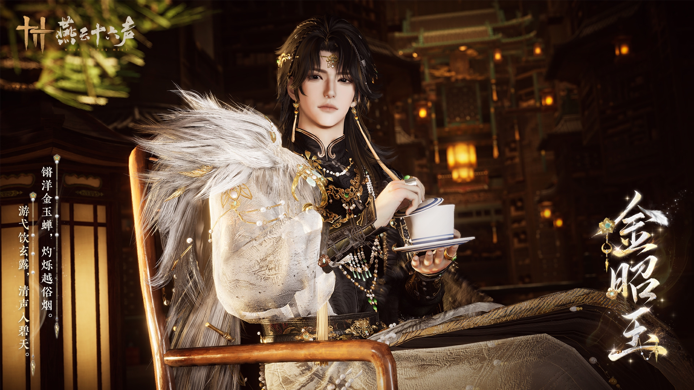
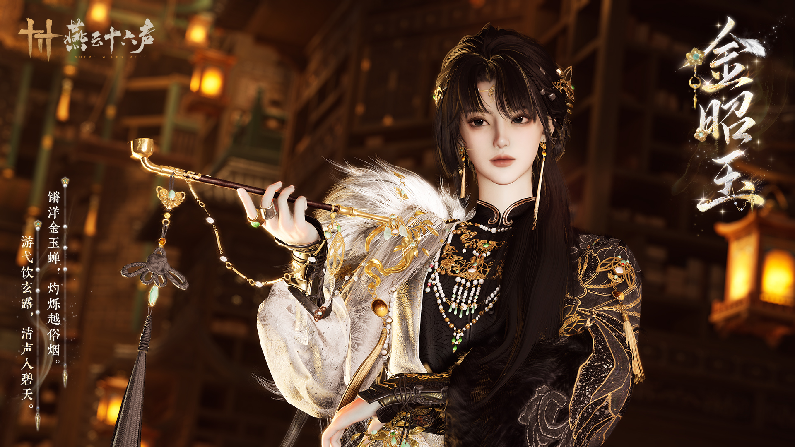
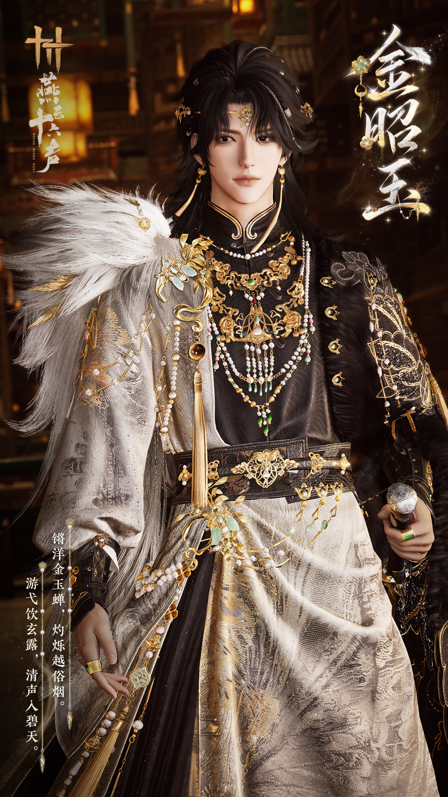
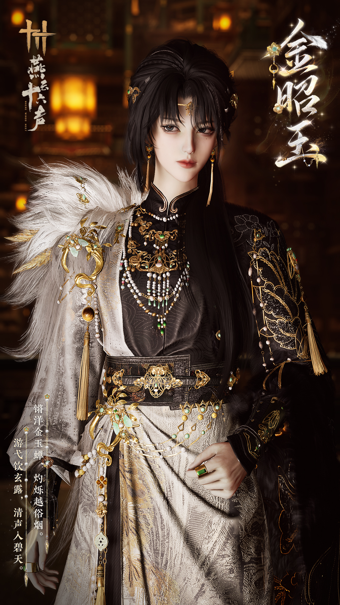
*사전 연구 단계의 효과 시연입니다. 실제 출시 내용을 기준으로 해 주세요.
금빛과 옥빛 매미가 쟁그랑 울리고, 빛나는 모습은 속세의 안개를 넘어선다. 노닐며 이슬을 마시고, 맑은 울림은 푸른 하늘에 퍼진다.
이 의상 세트는 등불 곁에 기대어 한가로이 술을 마시고 온몸에 주옥을 걸친 우아한 모습을 바탕으로 했습니다. 짙은 검정과 은백색이 겹쳐 옷을 이루어, 멀리서 보면 맑은 밤의 달빛을 두른 듯하며 짙은 색채로 눈길을 끌지 않습니다. 하지만 가까이서 보면 화려함이 한눈에 드러납니다.
은실 자수가 옷깃과 어깨, 등에 겹겹이 은은하게 놓여 짙은 검정 바탕에서 반짝입니다. 어깨에는 흰 모피를 비스듬히 걸치고, 진주 목걸이는 목을 감싸며 늘어집니다. 금과 옥, 술 장식이 사이사이에 더해져 장신구가 화려하지만 옷의 흐름을 따라 배치되어 번잡하면서도 질서가 있습니다. 특히 치맛자락에서 세심한 솜씨가 돋보입니다. 겉감은 매미 날개처럼 얇은 사인데도 복잡한 무늬가 촘촘히 수놓여 허리부터 길게 펼쳐집니다. 안감의 짙은 검정에는 촘촘한 반짝임이 박혀 밤하늘에 별이 떠 있는 듯합니다. 움직일 때마다 패옥이 부딪히는 소리가 들리고 진주 장식이 살짝 흔들려, 금빛의 화려함과 옥처럼 고운 자태가 한층 두드러집니다.
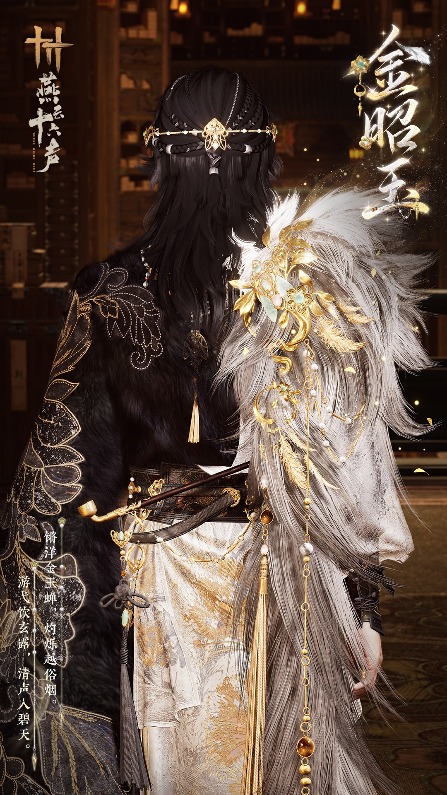
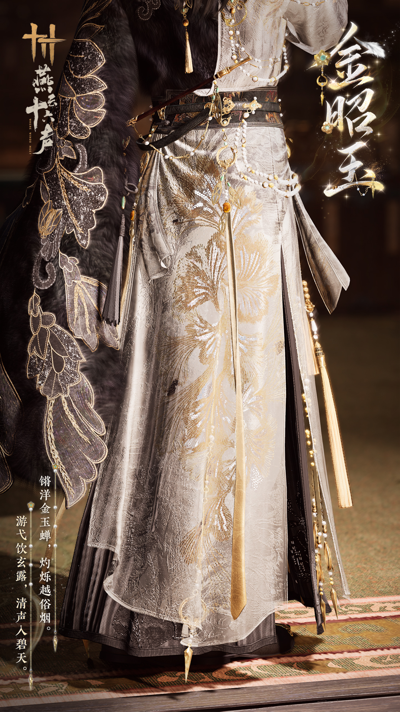
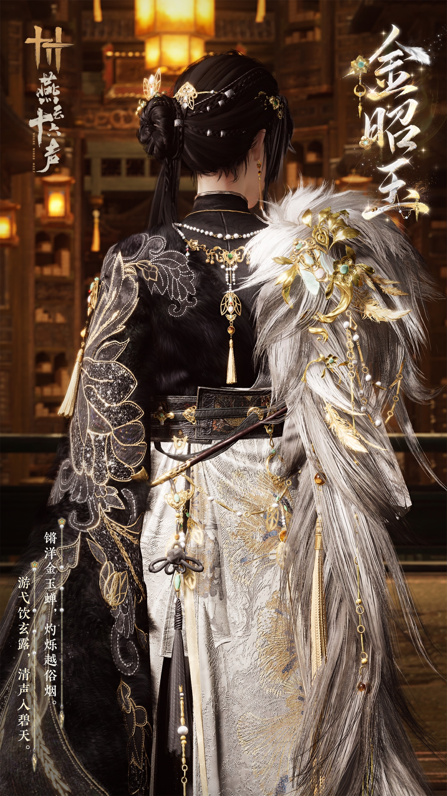
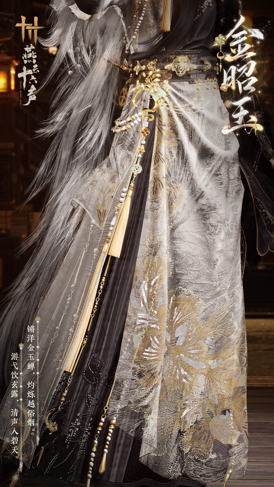
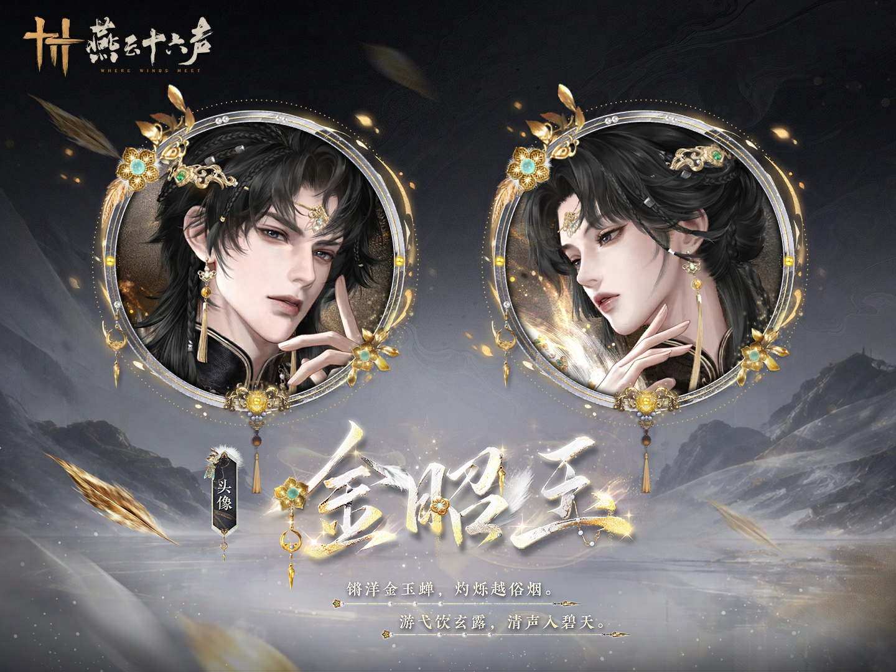
*사전 연구 단계의 효과 시연입니다. 실제 출시 내용을 기준으로 해 주세요.
새로운 헤어스타일
【금옥몽】
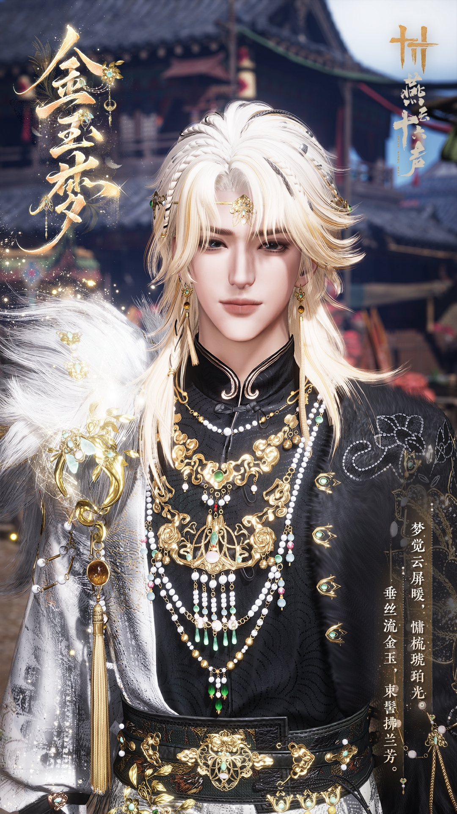
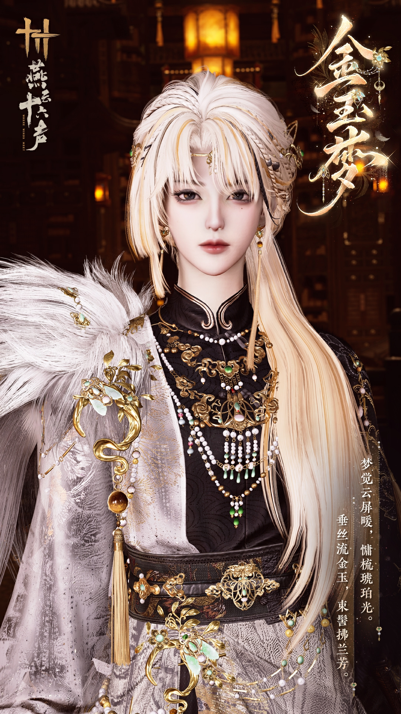
*사전 연구 단계의 효과 시연입니다. 실제 출시 내용을 기준으로 해 주세요.
꿈에서 깨어나니 구름 병풍이 따뜻하고, 게으르게 머리를 빗으니 호박빛이 감돈다. 늘어진 머리카락에 금과 옥의 빛이 흐르고, 머리를 묶자 난초 향기가 스친다.
9월 24일 버전 업데이트 후 협객은 신규 기간 한정 이벤트【금성옥윤】에 참여해【옥연두】로 옥 장식을 할 수 있습니다. 의상 세트【금소옥】, 헤어스타일【금옥몽】, 유광【학요청휘】등 귀중한 보상을 획득할 수 있습니다. 의상 세트【금소옥】을 모두 모으면 협객에게【결산 연출】, 【얼굴 화장】, 【캐릭터 프로필】을 증정합니다.
첫 옥 장식에는 【옥연두】가 소모되지 않습니다. 또한 장명옥과 장명주로 【옥연두】를 교환할 수 있으며, 장명옥으로는 최대 18개까지 교환할 수 있습니다. 이벤트에는 【금】, 【옥】, 【주】, 【전】의 4개 보상 풀이 마련됩니다. 4개 보상 풀 각각에서 추첨 횟수를 누적하면 다양한 보상도 받을 수 있습니다.
【전】 보상 풀에서는 처음 3번의 절세 보상 획득 시 다음 중 하나를 확률에 따라 받습니다: 담골함*1, 금옥몽·귀속*1, 학요청휘·귀속*1. 4번째 절세 보상으로는 반드시 담골함*1을 받습니다(【태일현석】 또는 【음의 선율(귀속)】 중 하나를 선택해 획득할 수 있습니다). 금옥몽과 학요청휘는 사용하지 않은 상태라면 귀속 공명 구슬로 교환할 수 있습니다. 금옥몽을 사용하면 증정품인 금옥몽·캐릭터 프로필 사진을 받습니다. 교환은 되돌릴 수 없으며, 공명 구슬로 교환한 뒤에는 외형으로 다시 바꿀 수 없습니다.
이벤트 규칙에 관한 자세한 내용은 협객 여러분께서 정식 공지에서 확인해 주세요.
협객 여러분의 헤어스타일 조합과 염색 경험을 개선하기 위해, 이번에는 의상 세트 【금소옥】과 헤어스타일 【금옥몽】의 첫 출시와 함께 새로운 외형 기능 2가지도 선보입니다.
첫 번째는 헤어스타일 재단 기능입니다. 협객은 아이템【백식소】를 소모해 재단형 헤어스타일을 해금할 수 있습니다.【금소옥】과【금옥몽】모두 재단을 지원합니다.
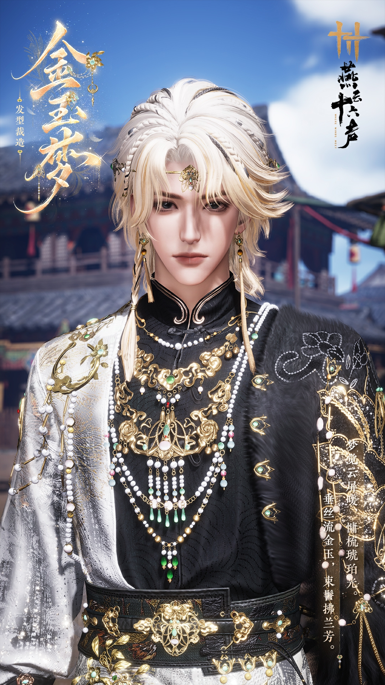
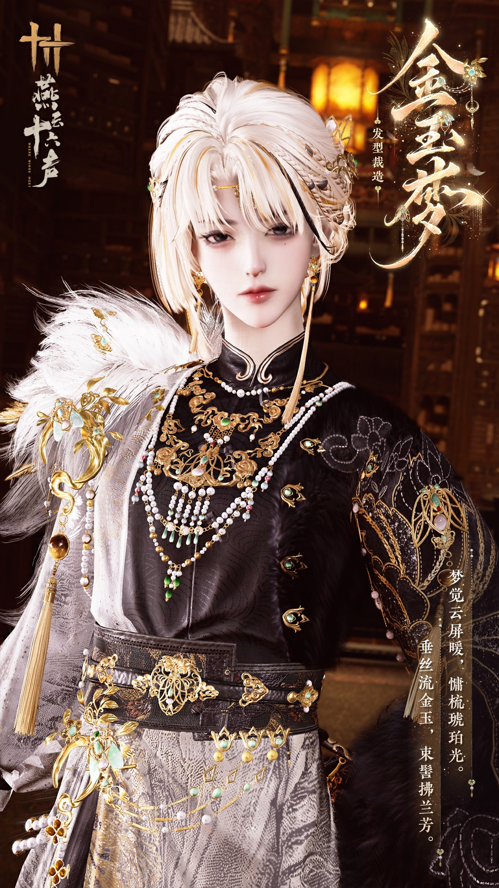
*사전 연구 단계의 효과 시연입니다. 실제 출시 내용을 기준으로 해 주세요.
두 번째는 구역별 머리 염색 기능입니다. 협객 여러분은 헤어스타일의 구역마다 색상과 그러데이션 설정값을 따로 조정할 수 있습니다. 이번 신규 헤어스타일 【금옥몽】에서 이 기능을 이용할 수 있습니다.
앞으로 더 많은 신규 헤어스타일에도 디자인에 따라 위 기능을 차례로 적용할 예정입니다. 관련 경험을 계속 개선하고 실용적인 기능도 더 많이 선보일 테니, 협객 여러분의 기대 부탁드립니다!
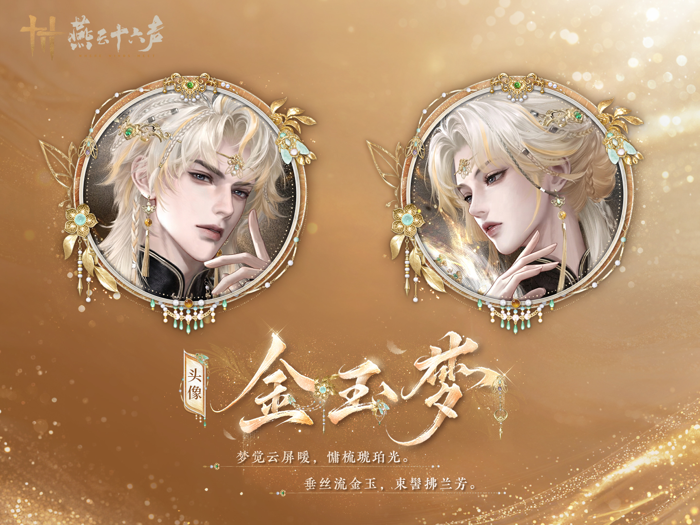
*사전 연구 단계의 효과 시연입니다. 실제 출시 내용을 기준으로 해 주세요.
새로운 외형 종류－유광
【학요청휘】
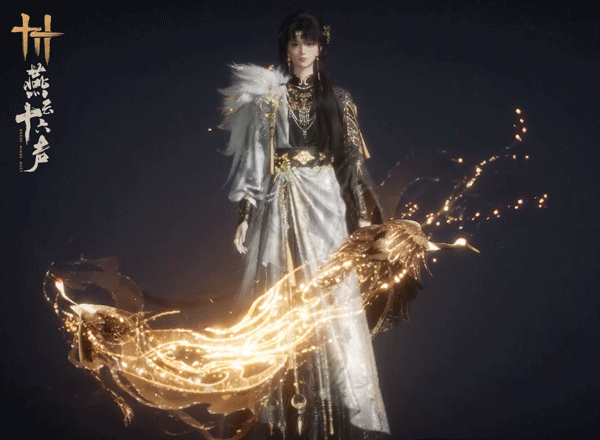
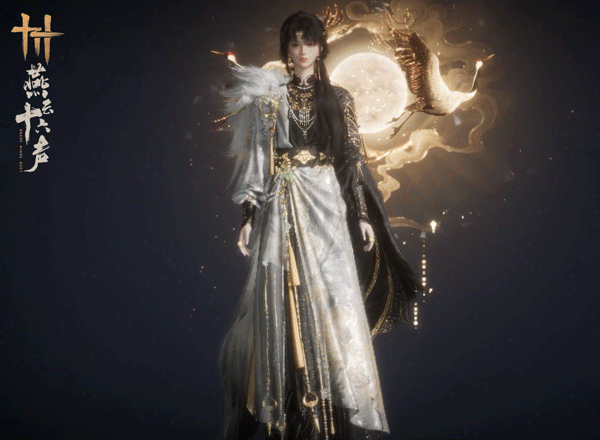
*사전 연구 단계의 효과 시연입니다. 실제 출시 내용을 기준으로 해 주세요.
그윽한 나무 아래 달을 맴돌고, 작은 정자에 부는 바람 속에서 학이 길게 운다.
이번 업데이트로 새로운 외형 종류인 유광【학요청휘】가 추가됩니다. 착용하면 화려한 빛 효과가 협객의 몸 주위를 맴돕니다. 외형－옷장에서 ‘유광’ 종류 슬롯을 선택한 뒤 해당 외형을 고르면 효과를 미리 볼 수 있습니다.
새 강호령 의상 세트
【단풍잎이 쓸쓸히 흩날리다】
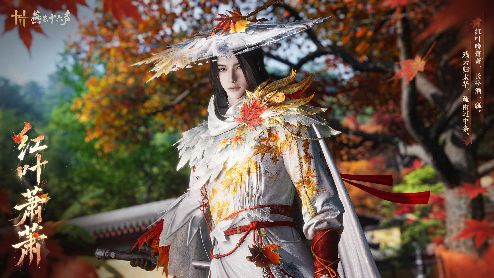
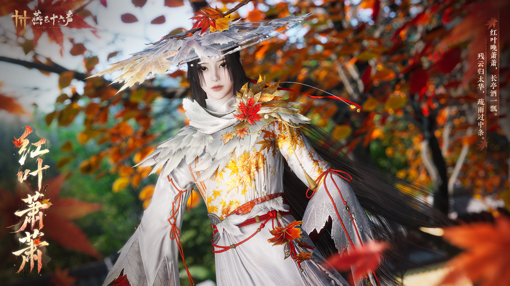
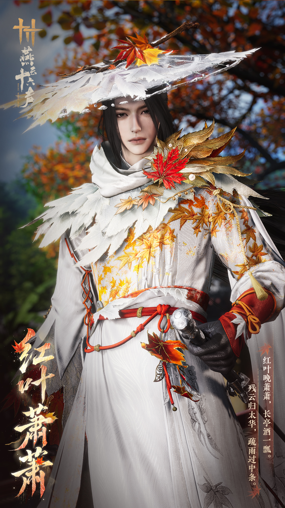
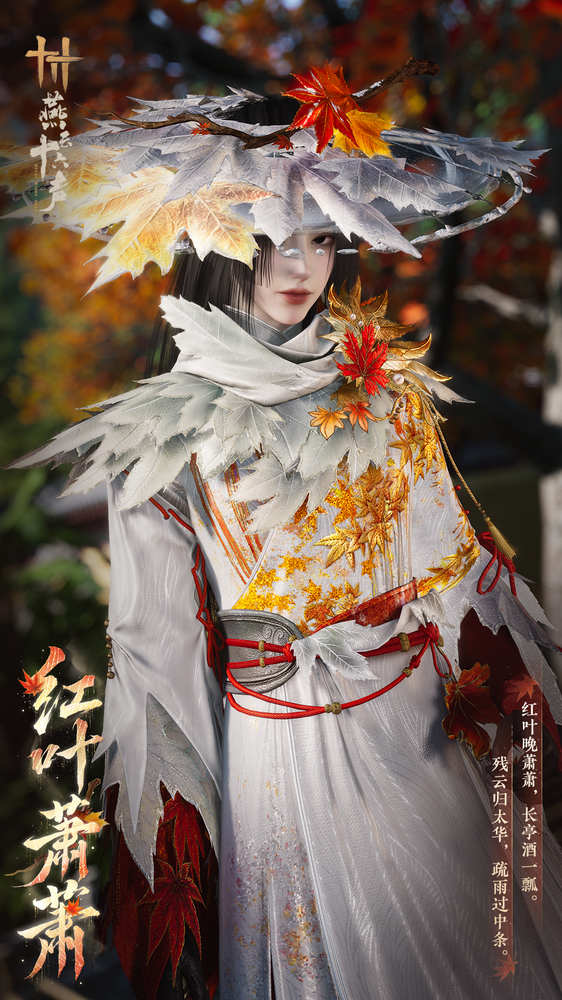
*사전 연구 단계의 효과 시연입니다. 실제 출시 내용을 기준으로 해 주세요.
저녁 단풍은 쓸쓸히 흩날리고, 긴 정자에는 술 한 병이 놓였네. 남은 구름은 태화산으로 돌아가고, 성긴 비는 중조산을 지나가네.
늦가을 단풍 풍경에서 착안해 서리처럼 흰 옷에 붉은 단풍을 장식으로 더했습니다. 겹겹이 쌓인 잎이 삿갓에서 어깨로 비스듬히 떨어지고, 긴 머리 사이로 붉은 단풍 한 점이 시선을 이끕니다. 붉은 끈으로 허리를 묶고 술 장식이 늘어집니다. 옷자락은 순백색에서 붉은 금빛으로 물들며, 끝자락에 이르면 가을바람이 산림을 휘감아 온 산의 붉은 잎이 발아래 모여든 듯합니다. 온몸에 쓸쓸히 흩날리는 단풍을 두르고 가을 풍경 속 인간 세상에 취해 듭니다.
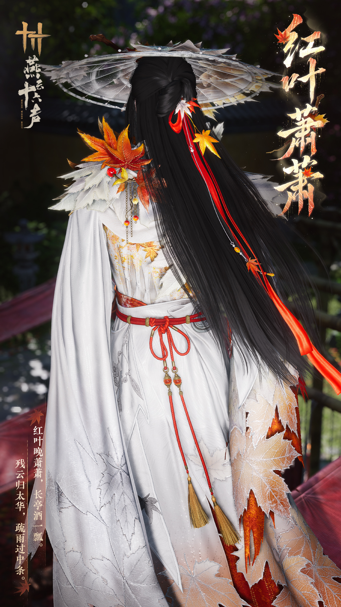
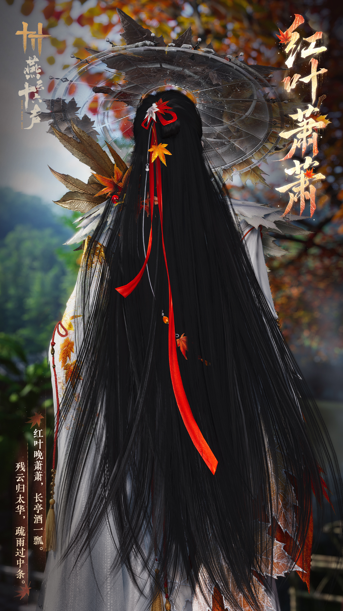
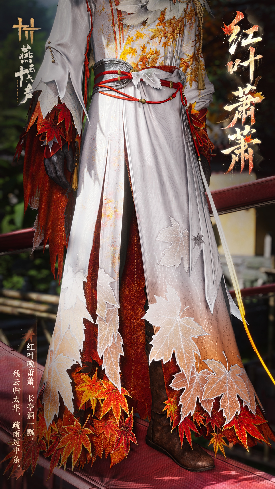
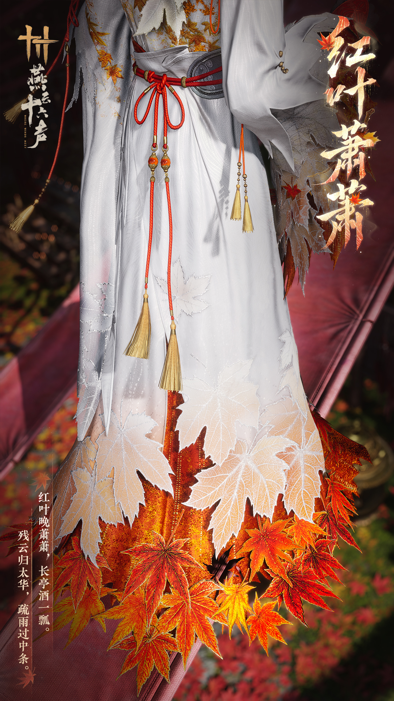
*사전 연구 단계의 효과 시연입니다. 실제 출시 내용을 기준으로 해 주세요.
2026년 9월 24일 버전 업데이트 후 강호령 「남려상화·상」이 열립니다.
정예 강호령을 구매하면 의상 세트 【단풍잎이 쓸쓸히 흩날리다】, 배경 장식, 대기 자세, 제발, 음의 선율, 장명옥 등의 추가 보상을 해금하고 정예 혜택을 받을 수 있습니다. 전설 강호령을 구매하면 즉시 10레벨이 오르고 배경 장식, 명함, 음의 선율도 추가로 받습니다. 정예 강호령의 모든 추가 보상도 해금하며, 더 많은 전장 혜택을 누릴 수 있습니다.
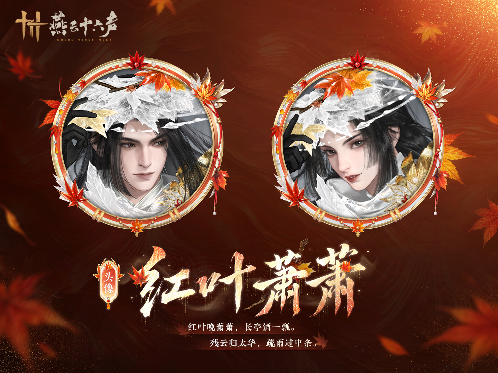
*사전 연구 단계의 효과 시연입니다. 실제 출시 내용을 기준으로 해 주세요.
새 무기 외형·우산
【만뢰·먼지 속에서 달을 보다】
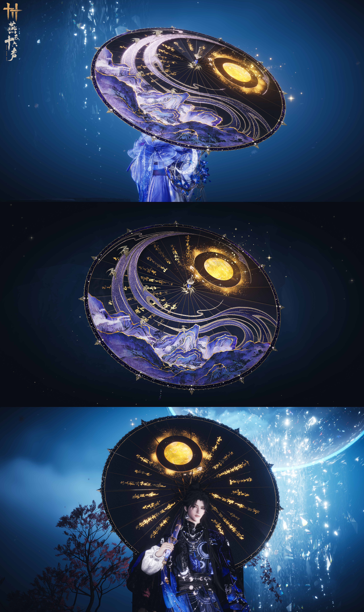
*사전 연구 단계의 효과 시연입니다. 실제 출시 내용을 기준으로 해 주세요.
속세에서 달을 보니 마음도 한가로운데, 하물며 맑은 가을 선경에 있으랴. 빛은 유유히 응기고 찬 이슬은 떨어지니, 지금 가장 높은 산에 서 있네.
우산을 펼치면 별의 강이 아득히 이어지고 밝은 달이 높이 떠 있습니다. 하늘빛이 내려와 겹겹이 이어진 산봉우리와 산중에 떠도는 안개를 비춥니다. 중추절 밤 높은 곳에 올라 바라보면, 만 리의 산과 강 너머에서도 오늘 밤의 맑은 달빛을 함께 누릴 수 있습니다.
새 무기 외형·우산【만뢰·먼지 속에서 달을 보다】는 이번 주 버전 업데이트 후 출시됩니다. 협객은 그때 「상점」에서【장명주】1280개로 구매할 수 있습니다.
이 밖에도 이번 주에는 「공명-옥진의 메아리」 의상 세트와 중추절 기념 의상 세트가 새로 출시됩니다. 협객 여러분께는 추후 자세히 소개하겠습니다.
이번 주 업데이트 후 동맹 콘텐츠에도 대대적인 개편이 이뤄집니다. 새로운 시즌제 육성 체계, 명예 체계 개편, 상점 상품 추가와 부담 완화 개선 등이 포함되며, 이 밖에도 여러 변화가 있습니다. 동맹에 참여하는 협객은 신규 의상 세트, 멀티플레이 결산 연출, 여러 명이 함께하는 대기 자세, 장막, 협명 등 다양하고 새로운 보상도 받을 수 있습니다.
오늘은 먼저 협객 여러분께 신규 의상 세트 【의귀】와 첫 기간 한정 멀티플레이 결산 연출 【엽락성수】의 보상을 보여드립니다. 더 많은 소식은 추후 전해 드리겠습니다!
동맹－무료 외형 추가
신규 의상 세트 【의귀】, 멀티플레이 결산 연출
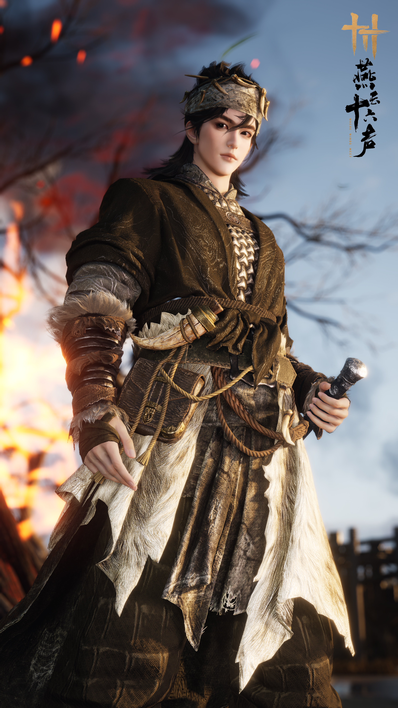
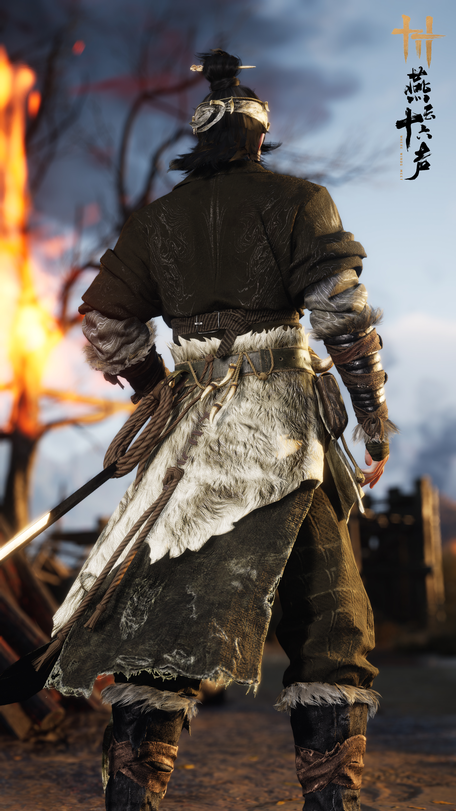
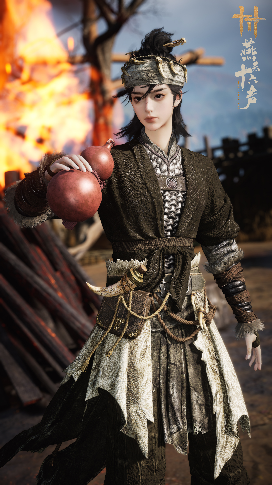
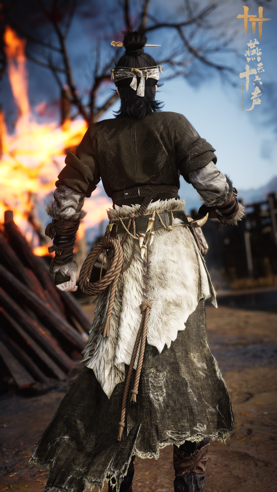
*사전 연구 단계의 효과 시연입니다. 실제 출시 내용을 기준으로 해 주세요.
제비가 사방에서 날아와 이곳에 모여, 협객들과 의를 논하네
강호에 울려 퍼진 목소리가 누각 무대에 올라, 그대와 함께 귀 기울이네
연운 참가 확정
핵융합 2026(核聚变2026, 핵융합 행사) & GGG 리듬 축제의 밤(GGG节奏联欢夜, GGG 리듬을 주제로 한 축제 행사)!
10월 24~25일, 베이징 서우강 국제전시센터(北京首钢国际会展中心, 베이징 서우강의 국제 전시 시설)
협객 여러분과 함께 모이기를 기대합니다!
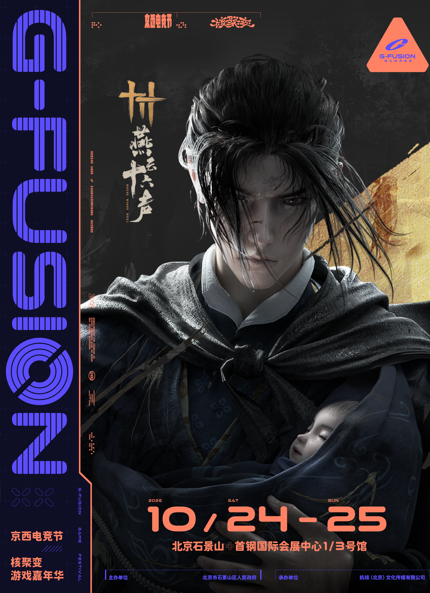
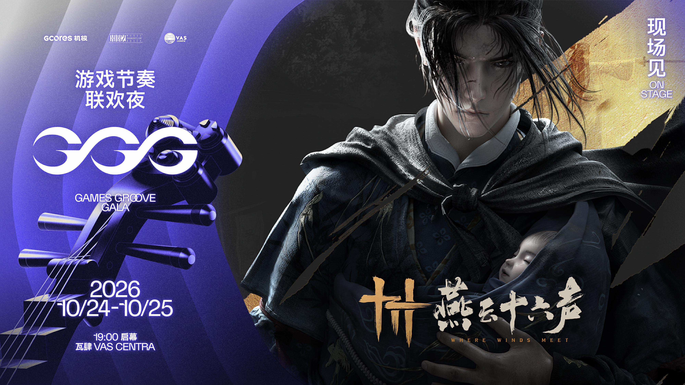